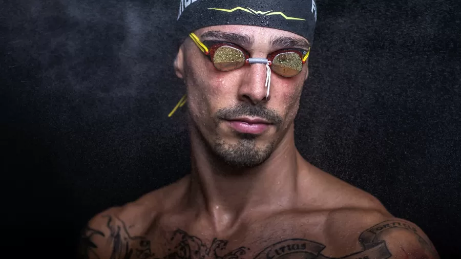
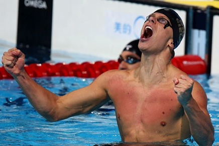
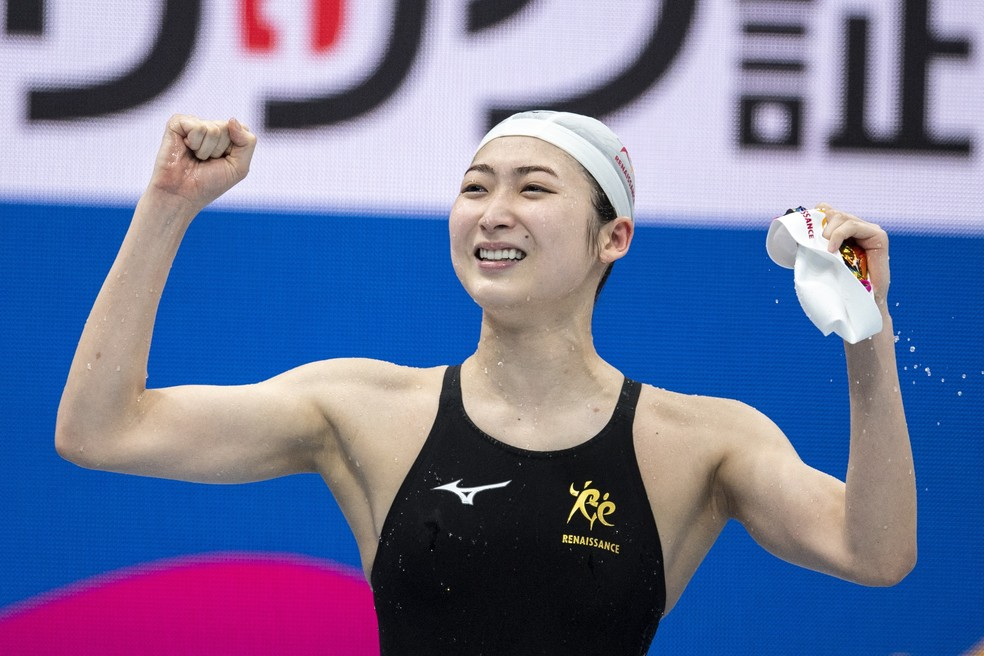
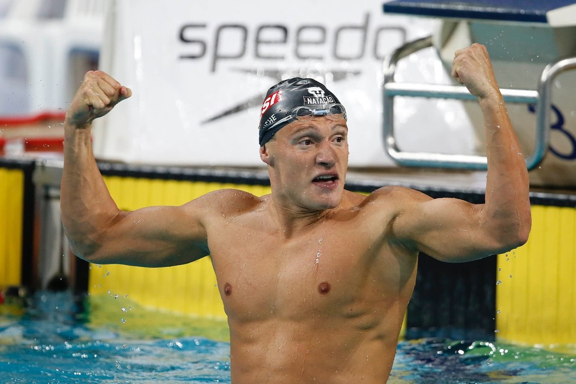
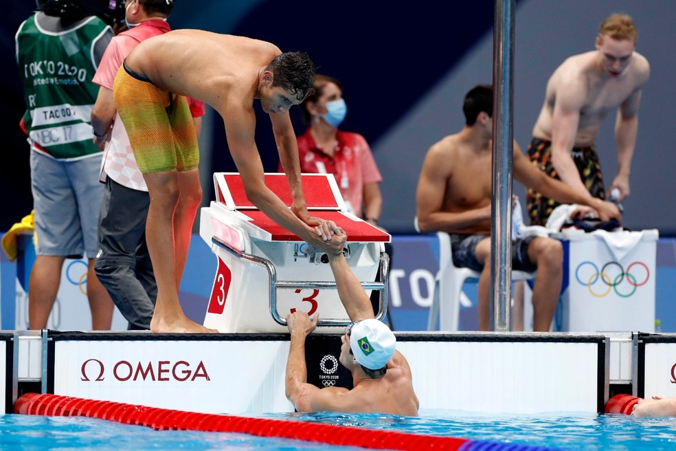
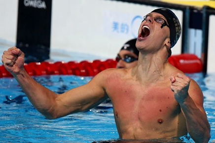

Fratus abre mão do revezamento para focar nos 50m livre em Tóquio. Leia Mais...  Cielo lembra detalhes do ouro em Pequim: "Se existe uma felicidade plena, eu vivi naquele momento. Leia Mais...  Rikako Ikee, rosto e alma das Olimpíadas, abre campanha na natação Leia Mais...  Olimpíada de Tóquio: Confira a agenda de provas de Matheus Gonche na natação Leia Mais...  Revezamento 4x100m livre está na final na natação Leia Mais...  Confira abaixo alguns dos melhores momentos da Natação:
Cielo lembra detalhes do ouro em Pequim: "Se existe uma felicidade plena, eu vivi naquele momento. Leia Mais... 